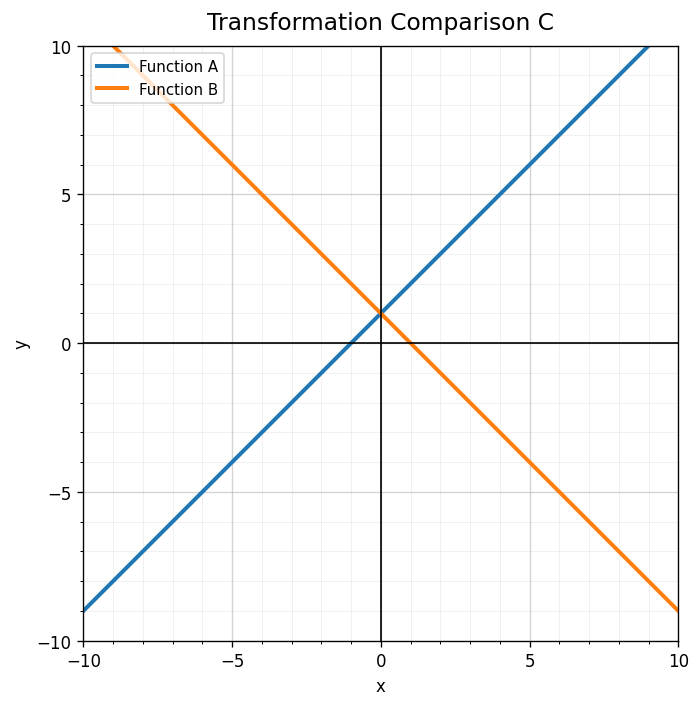
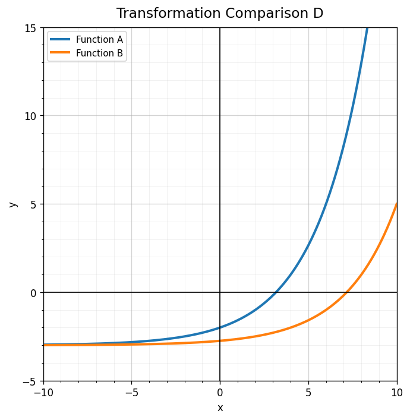

Classify $25x^2-1$ as a difference of squares, perfect square trinomial, or neither.
Identify the missing term that would make $x^2+□+81$ a perfect square trinomial.
Factor completely.
$$9x^2-16$$
Explain why $x^2+16$ does not factor as $(x+4)(x-4)$.
Use the graph. Which relationship is a reflection of the other over the $y$-axis?

If $g(x)=f(x-5)$, is the graph shifted left or right?
What does the coefficient 3 do in $g(x)=3f(x)$?
Match each rule to the transformation type: $f(x)+2$, $f(x-2)$, $-f(x)$.
A parent graph has points $(-1,2)$, $(0,0)$, and $(1,2)$. List the points after the transformation $g(x)=f(x)+5$.
Describe the shift shown between Function A and Function B.

Explain how you can distinguish a vertical shift from a horizontal shift using a table of corresponding points.
Design two different transformations of the same parent function that share one point but differ elsewhere. Explain your design.
In a system, what does it mean for an ordered pair to satisfy both equations?
For the context “notebooks cost 2 dollars and binders cost 5 dollars,” identify what variables could represent.
Write a system for: 20 total items were sold, and the total revenue was 64 dollars. Items cost 2 dollars or 5 dollars.
A student solves a system and gets $(4,9)$. Explain how to interpret both coordinates in the original context.